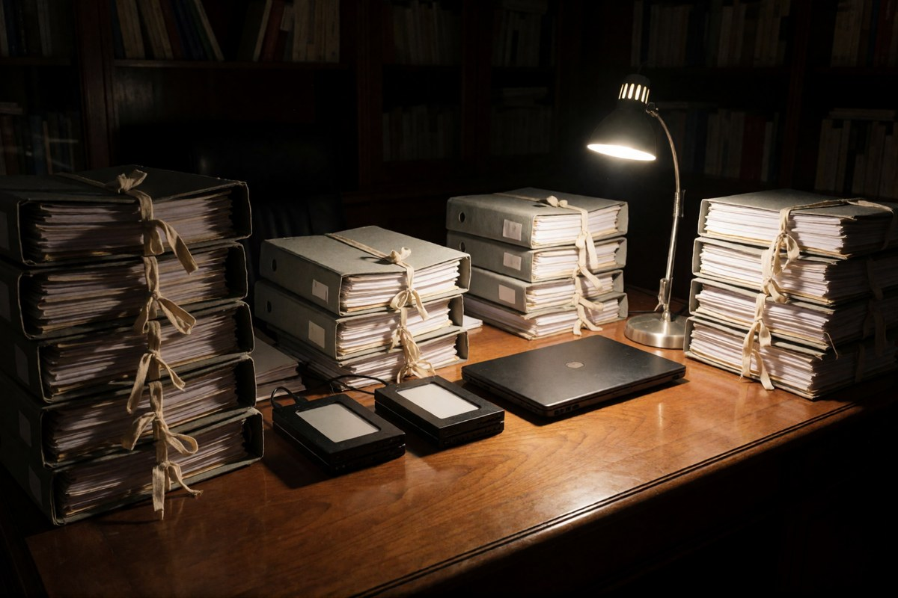

Cronaca · 22 novembre 2026
Via D'Amelio, l'inchiesta di Caltanissetta va avanti

La morte di Gianni De Gennaro estingue il reato per lui, non l'indagine sul depistaggio. Restano altri indagati, gli hard disk sequestrati e la decisione del Riesame del 1° dicembre. E l'antimafia si divide sui magistrati nisseni.
di Franco Zanghì
La morte di Gianni De Gennaro non chiude l'inchiesta della Procura di Caltanissetta sul depistaggio delle indagini sulla strage di via D'Amelio. Lo scrivono il quotidiano La Sicilia e il Fatto Quotidiano: i magistrati vanno avanti, a cominciare dai computer e dagli hard disk sequestrati.
A seguire il fascicolo è il pool che si occupa delle stragi, guidato dal procuratore aggiunto Salvatore De Luca. Sono in corso l'estrazione e l'analisi dei file presi dai computer e dagli smartphone, riferisce BlogSicilia.
Ieri mattina, racconta l'ANSA, al palazzo di giustizia di Caltanissetta c'era un'apparente normalità. La Procura, al quarto piano, era blindata come sempre, e nessuno, fra avvocati e dipendenti, ha voluto commentare.
Perché il fascicolo non si chiude
Per De Gennaro, come prevede il codice penale, la morte estingue il reato. Ma l'inchiesta non riguardava soltanto lui: restano aperte le posizioni di altri quattro indagati, fra cui la sua collaboratrice più stretta, un funzionario, un uomo della sua scorta e un collaboratore di giustizia storico. Per un magistrato indagato per un'altra ipotesi di reato, invece, il giudice per le indagini preliminari ha escluso ogni addebito.
Che cosa cercano i pubblici ministeri? Secondo la ricostruzione dell'accusa riportata da La Sicilia, documenti molto delicati sarebbero stati copiati su alcuni hard disk e su un computer mai collegato a internet, dopo che le carte originali, vecchie di quasi quarant'anni, erano state bruciate. È la tesi dei pubblici ministeri, non una sentenza.
In quei file, scrive il giornale, gli inquirenti cercano anche tracce dell'agenda rossa di Paolo Borsellino, sparita dopo la strage del 19 luglio 1992.
La difesa: «Si aprano quegli hard disk»
La difesa chiede esattamente la stessa cosa, ma per la ragione opposta. L'avvocato Francesco Bertorotta, che assisteva De Gennaro insieme a Franco Coppi, dice: «Che si aprano gli hard disk sequestrati e si veda cosa c'è dentro». Dentro, sostiene, non c'è nulla, «tantomeno l'agenda rossa».
Secondo le difese, riferisce il Fatto Quotidiano, quei supporti contengono documenti, appunti e materiale d'archivio, scansionato prima di disfarsi della carta. «Altro che depistaggio», è la sintesi dell'avvocato.
La partita si gioca davanti al Tribunale del Riesame. I pubblici ministeri avevano chiesto misure cautelari, il giudice le ha respinte, e il ricorso dell'accusa approda ora in quell'aula, che dovrà leggere migliaia di pagine. L'udienza è fissata per il 1° dicembre.
L'antimafia si divide
Intanto il mondo dell'antimafia si spacca. In un'intervista a la Repubblica, ripresa da BlogSicilia, Giuseppe Di Lello, magistrato del pool antimafia di Palermo negli anni Ottanta, attacca i pubblici ministeri di Caltanissetta: non può finire tutto «a tarallucci e vino», dice, e chiede un intervento del Consiglio superiore della magistratura o del procuratore generale della Cassazione.
Di Lello sostiene che a Caltanissetta si sia indagato su reati prescritti e che la mano sia stata forzata per ribaltare la storia. E ricorda che fu De Gennaro a portare e a proteggere Tommaso Buscetta a Palermo.
Sul fronte opposto, Antonio Ingroia dice che De Gennaro ha mancato l'appuntamento con la verità. Due letture che non si incontrano, e che da domani avranno lo stesso punto di riferimento: le carte.
Il punto
Se ci sono fatti da chiarire, l'inchiesta deve andare avanti. Ma un uomo che non può più difendersi non può diventare la risposta comoda a tutti i misteri del 1992: De Gennaro è morto da indagato, non da condannato, e così resta.
La domanda, allora, è una sola: chi garantirà, adesso, che a parlare siano gli atti e non le suggestioni?
Fonti
- Il Fatto Quotidiano, «Suicidio De Gennaro: si indaga sui documenti sequestrati. L'inchiesta di Caltanissetta va avanti, il legale: Aprano gli hard disk, non c'è nulla», 22 novembre 2026
- BlogSicilia, «Morte De Gennaro, l'antimafia si spacca tra pietas e sospetti. Due procure al lavoro tra Grosseto e Caltanissetta», 22 novembre 2026
- La Sicilia, la ricostruzione dell'accusa sui documenti e sugli hard disk, 22 novembre 2026
- ANSA, la giornata al palazzo di giustizia di Caltanissetta, 22 novembre 2026
- la Repubblica, intervista a Giuseppe Di Lello, 22 novembre 2026
- Il Fatto Quotidiano, «Strage via D'Amelio, De Gennaro indagato per depistaggio: no ai domiciliari», 16 novembre 2026
Le accuse riportate sono ipotesi dei pubblici ministeri e non sentenze: per tutti gli indagati vale la presunzione d'innocenza, e il giudice per le indagini preliminari ha respinto la richiesta di misure cautelari. I nomi degli altri indagati, pubblicati da alcune testate, non sono riportati in questo articolo. Il quadro era quello della data di pubblicazione, con la decisione del Tribunale del Riesame attesa per il 1° dicembre 2026.